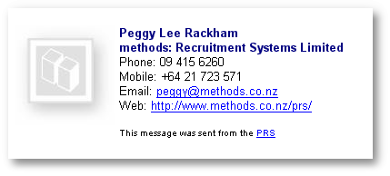
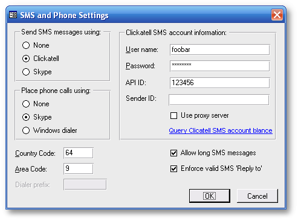

|
|
PRS News & Tips | December 2007 |
Latest News
Version 7.0.6 just in time for Christmas
We’ve just released PRS client version 7.0.6 — there are a lot of new goodies — here are the highlights:
-
Send HTML formatted emails directly from the PRS — the new HTML mail templates feature allows you to brand all outgoing emails with the company logo and customised signatures.
 -
You can now export Microsoft Outlook compatible Personnel, Reminders and Vacancies files and then import them directly into Outlook using the Import and Export menu command (in Outlook’s File menu) — this new feature is specifically targeted at users of PDAs that synchronise with Outlook.
-
Note content is no longer mandatory for non-system notes — if the Note Type has been entered you won’t be forced to enter the Note Content (handy for self explanatory note types).
-
If you use Skype you can now call Skype-to-Skype, Skype-to-landline or Skype-to-mobile directly from the PRS — just click on the Goto button next to phone numbers on the PRS Personnel or Sites forms.
 -
You now have the choice of using either Clickatell or Skype for sending SMS messages from the PRS.
See the changelog for a full list of the changes since the previous release.
To download and upgrade to PRS 7.0.6 go to the Installing the Latest PRS Client section on our Updates webpage page and follow the instructions.
Tips and Tricks
Add your company logo to all emails send from the PRS
-
Select the Options command from the PRS Tools menu.
-
If prompted logon as supervisor.
-
Click on the Mail tab and set the Mail format to HTML (you need to do this on all PCs).
-
Press the HTML Logo button and select your company’s logo image file (you only need to do this from one PC). Don’t forget to check your logo file is not too large — any more than 5KB is probably excessive.
|
Note
|
This feature requires PRS version 7.0.6 or better. |
Viewing candidate activity from the Personnel form
Press the Activity link on the Personnel record left-hand sidebar.
Printing candidate activity
The previous tip explain showed you how to view the candidate activity — if you want a printed copy press Ctrl+P.
Site Placement History
To see the full placement history for a particular site press the Placements link on the Sites record left-hand sidebar.
Recording client visits
Create a Note Type called Client visit then enter a Client visit note at the client’s Personnel record every time you visit. To report client visits:
-
Open the Notes Tool (PRS Tools→Notes menu command).
-
Press the Select button and select the Client visit note type then press the OK button.
-
Now that Client visit notes have been selected you can print them by pressing the Print button on the Notes Tool.
Need help?
-
Our Support web page explains how to get answers to PRS questions and includes links to articles on Maintaining Database Reliability and Performance and PRS Best Practice Deployment.
-
Don’t forget to check out our PRS Training Videos.
|
Important
|
If you no longer wish to receive this newsletter please email support@methods.co.nz with the word UNSUBSCRIBE in the subject line. |